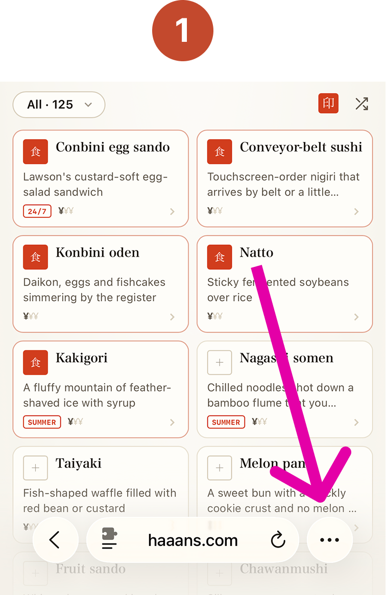
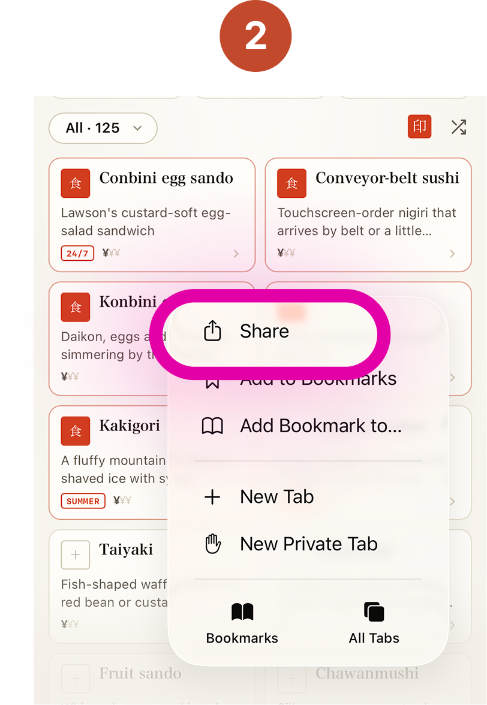
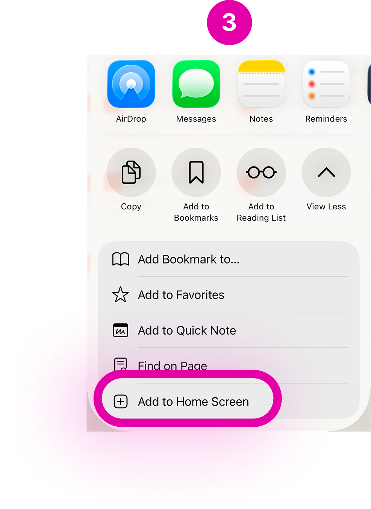

一族
Japan Clan
Sign in
Appearance
System
Light
Dark
Theme
Sign out
Offline access
¥
Only in 🇯🇵
印
¥
IOU Ledger
×
$
Paid by
Hans
Spencer
＋
Wut
Hans
Spencer
Add expenses above to split them evenly
Tip: paste a number or expense anywhere on the site to quickly add it.
Offline access
Tap
then
Share
, then
View More
, then
Add to Home Screen



wut?
hide